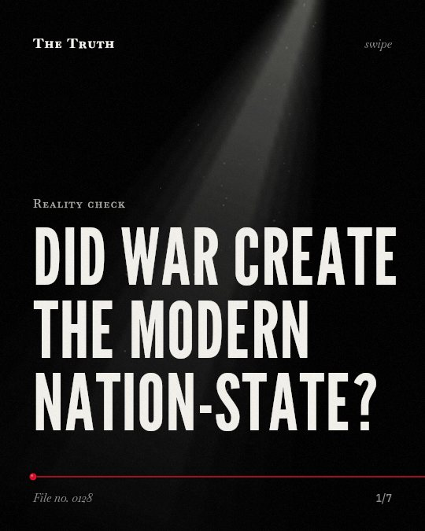

Reality check
Did war create the modern nation-state?

Warfare is linked to state formation, not the sole cause.
The transition from empires to nation-states is not a simple result of war. Evidence shows a link, but the cause-and-effect is not settled.
Supported. At least one solid peer-reviewed study. The evidence is mixed.
What the research found
The medieval Church served as a rival for sovereignty and a template for institutional innovations in court administrations, the law, and the formation of human capital.
“One answer is a powerful but neglected force in state formation: the medieval Church, which served as a rival for sovereignty, and a template for institutional innovations in court administrations, the law, and the formation of human capital.”
Review, 2019. Grzymała-Busse, Annual Review of Political Science.
The logic of war making was the driving force behind the rise of the modern state in Europe.
“From this perspective, the logic of war making was the driving force behind the rise of the modern state in Europe.”
Study, 2013. Neep, International Journal Middle East Studies.
It is simplistic to claim that war has led to a transition from empires to nation-states.
“It suggests that it is simplistic both to claim that war has led to a transition from empires to nation-states and that contemporary practices of war-making have led to a postnational era.”
Study, 2017. Hutchinson, Nations and Nationalism. This shows a link, not a cause.
Early states evolved the institutions to collect taxes and administer territory largely as a functional byproduct of interstate military competition.
“Early states therefore evolved the institutions to collect taxes and administer territory largely as a functional byproduct of interstate military competition.”
Study, 2013. Neep, International Journal Middle East Studies.
The machinery of state has many parents.
Modern states evolved to collect taxes and manage land due to military competition. However, the medieval church also served as a template for law and court administration.
The systems you live under are layered.
That may be why your current government feels like a blend of old religious structures and military history. It is a composite of many different forces.
This part is our reading of the evidence, not a finding.
A tax form on your desk.
The way you pay your taxes today is a functional byproduct of how early states needed to fund armies and manage territory.
The honest summary
The evidence shows that state formation is linked to military competition and institutional innovation, but also involves complex religious and nationalistic factors.
The sources do not provide a direct meta-analysis comparing the frequency of warfare in 'civilized' versus 'primitive' nations.
Which part of your life is a legacy of old war?
Sources
- Daniel Neep (2013). War, State Formation, and Culture. International Journal Middle East Studies. Study, cited 14 times.
- John F. Hutchinson (2017). Bringing the study of warfare into theories of nationalism. Nations and Nationalism. Study, cited 19 times.
- Anna M. Grzymała-Busse (2019). Beyond War and Contracts: The Medieval and Religious Roots of the European State. Annual Review of Political Science. Review, cited 90 times.
Also read for this file, not quoted
- Anand & Radhakrishna (2017). Investigating trends in human-wildlife conflict: is conflict escalation real or imagined?.
- Foot (2001). Cultural-historical activity theory as practice theory: illuminating the development of conflict-monitoring network.
- Breet et al. (2025). Change or stability? A meta-analysis of organizational responses to social and historical performance feedback.
This file was researched and drafted by software, then checked by rules a model cannot talk its way around: each quote above was matched word for word against the paper, and every number had to appear in it. How files are made.